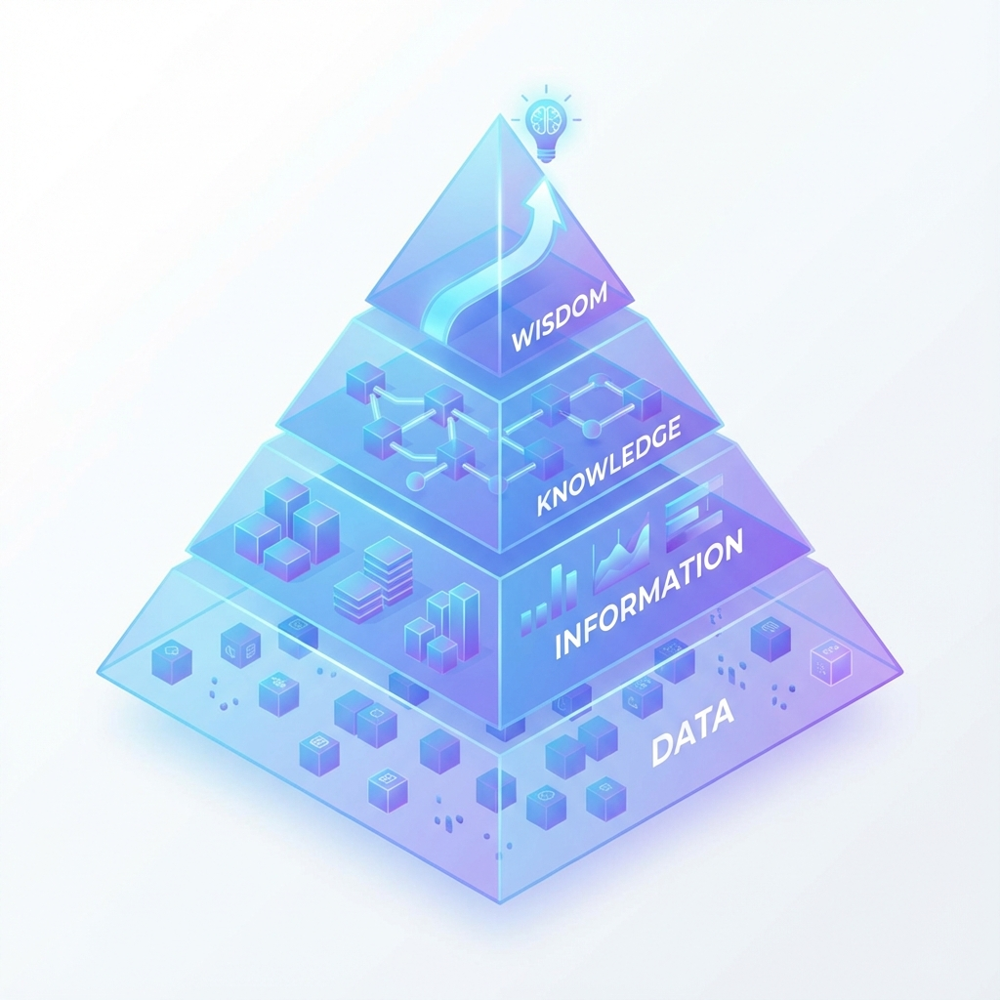

1. La Evolución de la Intuición al Dato
1.1. Introducción: El Valor Estratégico de una Cultura de Datos
La toma de decisiones en el mundo empresarial ha transitado un largo camino, evolucionando desde un arte basado en la intuición y la experiencia hacia una disciplina rigurosa fundamentada en la evidencia. En el vertiginoso mercado actual, la capacidad de una organización para transformar sus datos en inteligencia accionable ya no es simplemente una ventaja competitiva; se ha convertido en una condición indispensable para la supervivencia, la agilidad y el crecimiento sostenido. Las empresas que logran aprovechar eficazmente el análisis de sus datos no solo optimizan sus operaciones, sino que obtienen una ventaja significativa y medible sobre aquellos competidores que todavía navegan a ciegas, guiados únicamente por el instinto.
1.2. Breve Historia
La historia del análisis de datos es la historia de nuestra búsqueda de conocimiento. Inicialmente, los datos se registraban en sistemas transaccionales en papel, como libros contables, limitando su análisis a procesos manuales y lentos. La era digital marcó un punto de inflexión. Durante la década de 1960, proyectos de investigación pioneros comenzaron a desarrollar conceptos fundamentales que hoy sustentan el análisis moderno, como los términos "dimensiones" (el contexto) y "hechos" (las mediciones).
La década de 1970 fue testigo de un hito crucial cuando Bill Inmon empezó a definir el término "data warehouse", conceptualizando un repositorio centralizado diseñado específicamente para el análisis y la toma de decisiones. Esta idea sentó las bases para la arquitectura de inteligencia de negocios que conocemos hoy. Esta progresión histórica nos ha catapultado a la era actual, un mundo donde la escala de la información es casi inimaginable: se estima, según datos de IBM citados por el Banco Mundial, que producimos aproximadamente 2.5 quintillones de bytes de datos cada día, una cantidad que sigue creciendo de forma exponencial.
1.3. El Dilema Moderno: Parálisis por Análisis vs. Decisión a Ciegas
Las empresas modernas se enfrentan a un doble desafío en su relación con los datos. Por un lado, persiste la "decisión a ciegas", un enfoque donde la intuición y la experiencia personal siguen siendo las herramientas principales. Una encuesta de PwC de 2016 (Global Data and Analytics Survey: Big Decisions™) reveló que un sorprendente 33% de los ejecutivos todavía basan sus decisiones más importantes en su propia experiencia e intuición, un método que, aunque valioso, es insuficiente en un entorno de alta complejidad.
En el extremo opuesto se encuentra la "parálisis por análisis". La abundancia de datos, sin una estructura clara ni un propósito definido, puede abrumar a los equipos y llevar a la inacción. El exceso de información sin un camino claro hacia la inteligencia se convierte en ruido, no en una señal. El verdadero arte de una cultura de datos reside en navegar este estrecho pasaje: utilizar la estructura para evitar la parálisis, pero mantener la agilidad para no caer en la ceguera. El objetivo estratégico, por lo tanto, no son los datos por sí solos. La verdadera meta es la capacidad de obtener "información valiosa que conduzca a acciones más informadas". El valor no reside en la acumulación de datos, sino en la habilidad para convertirlos en conocimiento accionable que impulse el negocio.
1.4. Propuesta de Valor
Adoptar una cultura de toma de decisiones basadas en datos no es un ejercicio tecnológico, sino una decisión estratégica de negocio que se traduce en mayor agilidad, rentabilidad y resiliencia. Para aquellos que aún dudan, los beneficios son claros, tangibles y respaldados por evidencia.
- Adiós a la intuición, hola a la certeza: Dejamos de adivinar. Usamos datos reales para saber exactamente qué funciona y qué no, reduciendo el margen de error.
- Conocer mejor a nuestro cliente: Entendemos los hábitos y necesidades del pasajero real. Esto nos permite ajustar horarios y servicios donde realmente hacen falta.
- Eficiencia Operativa (Ahorro): Detectamos "fugas" de dinero y tiempo. Identificamos rápidamente ineficiencias en el consumo de combustible, talleres o logística para corregirlas al instante.
- Anticiparnos a los problemas: En lugar de apagar incendios, los prevenimos. Los datos nos avisan de riesgos potenciales (como fallas mecánicas recurrentes) antes de que detengan el servicio.
- Ventaja sobre la competencia: Quien decide rápido y bien, gana. Las empresas que usan datos crecen más rápido porque reaccionan antes a los cambios del mercado.
La evidencia es irrefutable: los datos son el activo más valioso de la era moderna. Pero para poder explotar este activo, primero debemos entender su naturaleza fundamental.
Perspectiva Estratégica: Ver los datos no como un coste de TI, sino como un activo generador de ingresos, es el primer y más crucial cambio de mentalidad en el camino hacia el liderazgo del mercado.
2. Cultura de Datos:
2.1. Introducción: Los Bloques Fundamentales del Conocimiento
La alfabetización de datos es la base indispensable sobre la que se construye cualquier iniciativa de análisis exitosa. Antes de poder analizar, modelar o visualizar, es crucial entender la naturaleza de los activos con los que trabajamos: los datos. Este capítulo tiene como objetivo desmitificar los conceptos esenciales, descomponiendo el proceso que transforma la materia prima (los datos brutos) en el producto final de mayor valor para el negocio: la sabiduría aplicable. Comprender estos bloques fundamentales es el primer paso para hablar el lenguaje de los datos con fluidez y confianza.
2.2. La Pirámide del Conocimiento (DIKW)

Figura 1: La Jerarquía DIKW
- Dato: Es la materia prima, la base de la pirámide. Los datos son muestras de la realidad, registradas como mediciones y valores discretos y objetivos. Ejemplos típicos son los datos operativos de las empresas, como el registro de una venta, la duración de una llamada o una lectura de un sensor. Por sí solos, carecen de contexto y significado.
- Información: Es el resultado de procesar, agrupar y organizar los datos para darles contexto. La información responde a las preguntas básicas: qué, quién, cuándo y dónde. Por ejemplo, al agregar los datos de ventas de un mes, obtenemos información sobre el total de ingresos. Los datos brutos se transforman en respuestas significativas.
- Conocimiento:Es la aplicación de la información. El conocimiento surge de la síntesis de múltiples fuentes de información para comprender patrones, tendencias y relaciones de causa y efecto. Si la información nos dice que las ventas de un producto aumentaron, el conocimiento nos explica por qué aumentaron, quizás al correlacionar ese aumento con una campaña de marketing específica.
- Sabiduría: Es el conocimiento aplicado con juicio y visión estratégica. La sabiduría representa la cima de la pirámide y es la capacidad de usar el conocimiento para tomar decisiones efectivas que generen mejores resultados a futuro. Implica comprender los principios fundamentales detrás de los patrones y tomar acciones proactivas. Por ejemplo, usar el conocimiento sobre el éxito de una campaña para diseñar una estrategia de marketing a largo plazo.
2.3. Visualizando el Concepto: La Pirámide DIKW en Acción (Caso Transporte Iselin)
Para ilustrar cómo funciona esta jerarquía en la práctica, aplicaremos el modelo a Transporte Iselin. A continuación, transformaremos datos crudos en decisiones estratégicas utilizando visualizaciones modernas.
Nivel 1: Datos (La Materia Prima)
Registros crudos generados minuto a minuto por las unidades y sistemas de boletería. Son hechos aislados sin contexto inmediato.
| ID Interno | Línea / Ruta | Timestamp | Evento / Métrica | Detalle |
|---|---|---|---|---|
| 45 | 501 (Urbana) | 07:15:00 | Corte Boleto | Abono Docente |
| 102 | San Rafael - Mza | 07:15:22 | Telemetría GPS | Vel: 85 km/h, Comb: 40% |
| 45 | 501 (Urbana) | 07:15:45 | GPS Parada | Lat: -34.6, Long: -68.3 |
Nivel 2: Información (El Contexto)
Procesamos los datos para responder qué está pasando. Aquí observamos el cumplimiento de horarios y la ocupación.
Gráfico 1: Promedio de Retraso por Línea (Minutos). Se observa un retraso notable en la línea a Gral. Alvear.
Nivel 3: Conocimiento (El Porqué)
Cruzamos variables para entender la causa raíz. Analizamos la correlación entre el tiempo de demora y el método de pago.
Gráfico 2: Correlación entre Pagos en Efectivo y Tiempo de Demora en Parada. A mayor efectivo, mayor demora.
Nivel 4: Sabiduría (La Acción Estratégica)
🚀 Acción Directiva
Problema Detectado: El retraso en Media Distancia no es por velocidad, sino por el tiempo de cobro en efectivo a bordo.
Decisión:
- Implementar venta obligatoria de pasajes anticipados o QR para paradas intermedias clave.
- Ajustar cuadro de horarios sumando 10 min en horas pico.
Perspectiva Estratégica: En una empresa como Iselin, la fluidez en la jerarquía DIKW es la diferencia entre tener colectivos circulando vacíos y tener una flota optimizada.
2.4. Tipos de Datos
Los datos que alimentan la pirámide del conocimiento se presentan en dos formatos principales, cada uno con sus propias características y desafíos.
- Estructurados: Son datos que residen en un campo fijo dentro de un registro o archivo, adhiriéndose a un esquema predeterminado y bien definido. El ejemplo más común son las tablas en bases de datos relacionales (como SQL) u hojas de cálculo (como Excel), donde cada pieza de información tiene su propia columna y tipo de dato. Su organización rígida los hace más fáciles de consultar, gestionar y analizar con herramientas tradicionales.
- No Estructurados: Son datos que no se organizan según un esquema predeterminado. Este universo incluye una vasta y diversa gama de información como el texto de correos electrónicos, el contenido de publicaciones en redes sociales, imágenes, videos y archivos de audio. Aunque su análisis es inherentemente más complejo y requiere herramientas avanzadas, su flexibilidad permite un almacenamiento rápido y la capacidad de capturar una realidad mucho más rica y matizada que los datos estructurados por sí solos.
3. La Fábrica de Datos
3.1. Introducción
Si los datos son el nuevo petróleo, la ingeniería de datos es la refinería. Detrás de cada dashboard intuitivo y cada informe revelador, existe una compleja maquinaria de procesos que trabajan en silencio. Podemos visualizar esta infraestructura como una fábrica: los datos brutos de diversas fuentes entran como materia prima, se someten a un riguroso proceso de transformación y control de calidad, y salen como productos de información refinada y lista para el consumo. Aunque estos procesos son a menudo "invisibles" para el usuario final, constituyen la columna vertebral que garantiza que la información sea fiable, consistente y esté disponible en el momento preciso para la toma de decisiones estratégicas.
3.2. El Viaje del Dato
El ciclo de vida de un dato es un viaje fascinante. Comienza en el momento de su creación, en un sistema operacional como un ERP (planificación de recursos empresariales), un CRM (gestión de relaciones con el cliente) o incluso un simple archivo de texto generado por una aplicación web. Desde este punto de origen, el dato es extraído y transportado a un área de preparación. Aquí, se somete a un proceso de limpieza y transformación para corregir errores, estandarizar formatos y enriquecerlo con información de otras fuentes. Una vez refinado, el dato es cargado en un repositorio centralizado, como un Data Warehouse. Finalmente, queda a disposición de los usuarios de negocio, quienes lo consumen a través de herramientas de análisis, informes y dashboards para extraer conocimiento y tomar decisiones informadas, completando así su viaje de valor.
3.3. Data Warehouse
Un Data Warehouse es como el almacén central y ordenado de toda la información importante de una organización. En lugar de tener datos dispersos en distintos sistemas (ventas, CRM, Excel, contabilidad, soporte, etc.), el Data Warehouse los integra, limpia y organiza para que todas las áreas puedan trabajar con información confiable y coherente.
Podés imaginarlo como un lugar donde los datos llegan “desordenados”, pero antes de guardarlos se clasifican, estandarizan y acomodan, para que luego sean fáciles de consultar y analizar.
¿Para qué sirve?
- Para tener reportes confiables.
- Para analizar el negocio sin contradicciones entre áreas.
- Para responder preguntas como:
- ¿Cuánto vendimos?
- ¿Cuántos clientes perdimos?
- ¿Qué productos son más rentables?
Ventajas principales
- Información consistente: todos miran los mismos datos, con las mismas definiciones.
- Velocidad en los análisis: al estar optimizado, las consultas son más rápidas.
- Histórico del negocio: permite ver tendencias a lo largo del tiempo.
- Mejor toma de decisiones: al tener datos limpios, integrados y confiables.
¿Por qué es clave una “fuente única de verdad”?
Cuando cada área trabaja con su propio Excel o sistema, aparecen versiones distintas de la realidad. El Data Warehouse unifica todo eso y se convierte en la referencia oficial de la empresa.
Esto evita discusiones del tipo:
- “A mí me da otro número…”
- “Ese dato no coincide con mi reporte…”
- “En mi Excel aparece diferente…”
Con una fuente única de verdad, todos hablan el mismo idioma de datos.
3.4. El Proceso de Manufactura: Entendiendo ETL
El proceso más tradicional y fundamental para poblar un Data Warehouse es el ETL (Extract, Transform, Load). Podemos compararlo con una línea de montaje industrial que convierte materias primas en productos terminados.
-
Extracción (Extract): Recolección de Materia Prima
Esta es la fase inicial donde se recolecta el material. Consiste en 'aspirar' los datos de sus fuentes originales. Estas fuentes pueden ser muy variadas y desorganizadas: bases de datos operacionales (como las de venta de boletos o registros de GPS), archivos simples (como hojas de cálculo o logs de servidores), e incluso información proveniente de sistemas externos.
Analogía: Es como recolectar el algodón crudo de diferentes campos, sin importar si está sucio o mezclado.
-
Transformación (Transform): Refinamiento y Preparación
Aquí ocurre el verdadero trabajo de procesamiento. Los datos se llevan a un área de preparación donde se someten a operaciones críticas para asegurar su calidad y utilidad:
- Limpieza: Se corrigen errores, se eliminan duplicados y se resuelven inconsistencias (por ejemplo, un registro de GPS con una fecha errónea).
- Estandarización: Se asegura que todos los datos tengan el mismo formato (por ejemplo, todas las fechas deben tener el formato AAAA-MM-DD).
- Combinación: Se unen datos de diferentes fuentes (por ejemplo, se combina el ID del Chofer del sistema de Recursos Humanos con los registros de consumo de combustible del sistema de telemetría).
-
Carga (Load): Almacenamiento para el Análisis
Esta es la fase final donde el producto terminado y refinado se guarda en su destino: el Data Warehouse.
Los datos, ya limpios, consistentes y organizados, se cargan de forma estructurada. Una vez allí, quedan listos para ser consultados, utilizados en tableros de control (dashboards) y analizados por los usuarios y gerentes para la toma de decisiones estratégicas.
Resultado: El Data Warehouse es el depósito final, un repositorio centralizado de información confiable.
4. Calidad y Gobierno: Construyendo Confianza
4.1. El Principio Fundamental: "Basura Entra, Basura Sale"
Existe una regla de oro en el mundo de los datos: la calidad del resultado depende totalmente de la calidad de lo que ingresamos. Podemos tener el software más costoso y los analistas más brillantes, pero si los datos originales son incorrectos, las decisiones también lo serán.
Piénsalo como el combustible de una unidad: si cargamos combustible sucio o adulterado, el motor fallará, sin importar cuán nuevo sea el camión o colectivo. La "higiene de datos" es el filtro que asegura que nuestro motor de decisiones funcione suavemente y sin fallas.
4.2. ¿Qué define a un Dato de "Alta Calidad"?
Para confiar en un reporte, debemos evaluar sus "signos vitales". Desglosamos la calidad en 6 dimensiones clave:
- Precisión (¿Es real?): El dato debe reflejar la realidad física.
Ejemplo: Si el GPS dice que la unidad está en la terminal, pero físicamente está en el taller, el dato no es preciso. - Completitud (¿Está todo?): No deben faltar piezas del rompecabezas.
Ejemplo: Una ficha de cliente es inútil si tiene el nombre pero le falta el número de teléfono o el DNI. - Consistencia (¿Coincidimos?): La información no debe contradecirse entre sistemas.
Ejemplo: Si el sistema de Tráfico dice que una unidad está "Activa" pero el sistema de Mantenimiento dice "En Reparación", tenemos un problema de consistencia. - Validez (¿Cumple las reglas?): El dato debe respetar el formato establecido.
Ejemplo: No podemos ingresar texto (como "diez pesos") en un campo diseñado para números, ni fechas imposibles como "30 de febrero". - Unicidad (¿Es único?): No queremos ver doble.
Ejemplo: Si un mismo chofer aparece creado dos veces con códigos diferentes, nuestros cálculos de horas trabajadas o comisiones saldrán mal. - Oportunidad (¿Es actual?): La información debe estar disponible cuando se necesita.
Ejemplo: Saber que una ruta estaba cortada ayer no nos sirve hoy. Necesitamos el dato en el momento justo para desviar la unidad a tiempo.
4.3. Gobernanza de Datos: Poniendo Orden en la Casa
La Gobernanza no es burocracia, es responsabilidad. Se trata de definir las "reglas del juego" y responder a una pregunta simple: ¿Quién es el dueño del dato?
En una organización, los datos (como las tarifas, los horarios o la lista de personal) deben tener un responsable claro que se encargue de crearlos, actualizarlos y borrarlos. La gobernanza establece quién tiene la "llave" para modificar información crítica, evitando que cualquiera pueda alterar datos sensibles por error y garantizando que todos sepamos a quién acudir si algo no cuadra.
6. Glosario y Referencia Rápida
6.1. Hablando el Mismo Idioma
Para que la comunicación fluya entre áreas (Tráfico, Taller, Administración), necesitamos compartir un diccionario común. Aquí "traducimos" los términos técnicos a conceptos del día a día.
- Big Data (Datos Masivos)
- No es solo tener "mucha información". Se refiere a datos que tienen gran Volumen, Velocidad (se generan rápido), Variedad (texto, GPS, video), Veracidad y Complejidad.
- Cloud Computing (La Nube)
- Es usar recursos (servidores, programas) a través de internet en lugar de tenerlos en el disco duro de tu computadora. Es como alquilar una oficina digital en lugar de construir una propia.
- Dashboard (Tablero de Control)
- Una pantalla visual con gráficos y semáforos que muestra el estado del negocio de un vistazo. Funciona igual que el tablero de un colectivo: te dice la velocidad y el combustible sin tener que mirar el motor.
- Dataset (Conjunto de Datos)
- Una colección específica de datos relacionados. Imagínalo como una carpeta o archivo que contiene toda la información sobre un tema (ej: "Dataset de Ventas de Enero").
- Data Warehouse (Almacén de Datos)
- Es nuestro gran archivo central. Un repositorio digital donde guardamos información histórica de toda la empresa, ya limpia y ordenada, lista para analizar y tomar decisiones.
- ETL (Extraer, Transformar, Cargar)
- Es el proceso de "logística del dato". Consiste en sacar los datos de su origen (Extraer), limpiarlos y arreglarlos (Transformar) y guardarlos en el almacén final (Cargar).
- KPI (Indicador Clave de Desempeño)
- Es la brújula del negocio. Un valor medible que nos dice si estamos cumpliendo nuestros objetivos principales (ej: Porcentaje de Puntualidad, IPK).
- NoSQL
- Bases de datos flexibles. A diferencia de las hojas de cálculo rígidas, estas permiten guardar información "desordenada" o variada, como comentarios de redes sociales o registros complejos de sensores.
- SQL (Lenguaje de Consulta Estructurado)
- Es el "idioma" estándar que usamos para hacerle preguntas a las bases de datos tradicionales (las que se ven como tablas con filas y columnas).
Autoevaluación
Pon a prueba tus conocimientos: